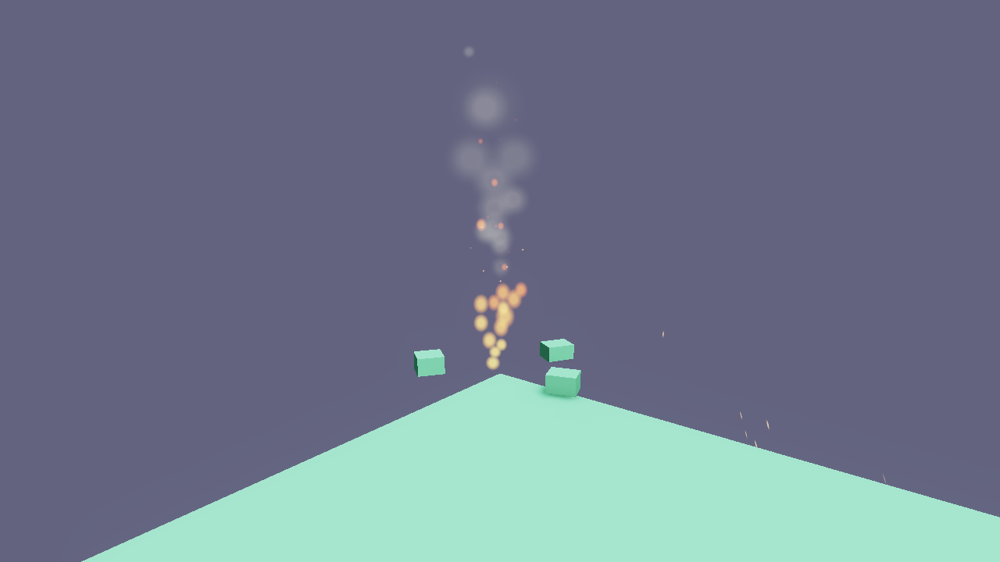

Particles
Flint’s particle system (flint-particles) provides GPU-instanced visual effects: fire, smoke, sparks, rain, dust, magic — any effect made of hundreds or thousands of small, short-lived elements. Since ADR 0068 it has two authoring paths, a deterministic simulation that headless renders can step, and its own editor.

Two Ways to Author
Inline particle_emitter | Effect asset + particle_effect | |
|---|---|---|
| Where it lives | On a scene entity | particles/<name>.particles.toml next to the scene (or one level up) |
| Emitters | One | Any number, simulated together |
| Curves, forces, bursts timeline, sub-emitters | No (start/end values only) | Yes |
| Reuse | Copy the block | Reference by name from any scene; play_effect from scripts |
| Editor | Scene inspector | flint edit fx.particles.toml — see the Particle Editor guide |
Both paths share one parser and one set of defaults, so anything an inline emitter accepts, an asset emitter accepts too.
Inline emitter
[entities.campfire]
[entities.campfire.transform]
position = [0, 0.2, 0]
[entities.campfire.particle_emitter]
emission_rate = 40.0
max_particles = 200
lifetime_min = 0.3
lifetime_max = 0.8
speed_min = 1.5
speed_max = 3.0
direction = [0, 1, 0]
spread = 20.0
gravity = [0, 2.0, 0]
size_start = 0.15
size_end = 0.02
color_start = [1.0, 0.7, 0.1, 0.9]
color_end = [1.0, 0.1, 0.0, 0.0]
blend_mode = "additive"
shape = "sphere"
shape_radius = 0.15
Effect asset
demo/particles/campfire.particles.toml, trimmed:
name = "campfire"
seed = 7
[[emitters]]
name = "flames"
emission_rate = 40.0
lifetime = [0.3, 0.8] # scalar or [min, max]
speed = [1.5, 3.0]
gravity = [0, 2.0, 0]
blend_mode = "additive"
size = { keys = [ { t = 0.0, v = [0.12, 0.12] }, { t = 0.3, v = [0.16, 0.2] }, { t = 1.0, v = [0.02, 0.02] } ], interp = "smooth" }
color = { keys = [ { t = 0.0, v = [1.0, 0.7, 0.1, 0.9] }, { t = 0.6, v = [1.0, 0.25, 0.0, 0.7] }, { t = 1.0, v = [0.4, 0.0, 0.0, 0.0] } ] }
angular_velocity = [-90, 90]
[emitters.shape]
kind = "cone"
radius = 0.15
angle = 10.0
[[emitters.forces]]
kind = "noise"
strength = 1.2
[[emitters]]
name = "embers"
emission_rate = 0.0
lifetime = [1.0, 2.5]
on_death = { emitter = "puff", count = 1, inherit_velocity = 0.2 }
[[emitters.bursts]]
time = 0.0
count = [3, 6]
cycles = 0 # 0 = repeat forever
interval = 1.5
[[emitters]]
name = "puff" # rate 0: only ever fed by dying embers
emission_rate = 0.0
lifetime = 0.4
Place it in a scene:
[entities.fire]
[entities.fire.transform]
position = [0, 0.15, 0]
[entities.fire.particle_effect]
effect = "campfire"
Unknown keys in an asset are a load error (typos fail loudly); inline components stay lenient. A missing name falls back to the file stem.
How It Works
authoring simulation (CPU) rendering (GPU)
particle_emitter ─┐ ParticlePipeline
particle_effect ─┼─► EffectInstance ─► EmitterState pool ─► one shared 64-byte
*.particles.toml ─┘ (transform, spawn / forces / instance buffer,
seed, budget) curves / kill sorted draw calls
Each effect instance owns one pool per emitter. Particles are integrated on the CPU (gravity, exponential damping, forces, curves) and packed into a single shared storage buffer; the renderer issues one instanced draw per emitter, order-dependent blends far-to-near, additive last. Nothing is an ECS entity, so an emitter can own thousands of particles cheaply.
The simulation is deterministic: every emitter has its own RNG seeded from the effect seed, the owning entity’s name and the emitter index, instances step in a fixed order, and flint render --particle-time advances in fixed 1/60 s steps. Two renders at the same time are byte-identical, which is what makes particle work reviewable by agents.
Ranges and Curves
Asset fields that vary over a particle’s life or per particle accept several spellings:
| Spelling | Meaning |
|---|---|
lifetime = 1.0 | Constant |
lifetime = [0.5, 1.5] | Random in the range at birth |
size = 0.2 | Constant over life (per-axis values use [w, h]) |
size = { start = [0.1, 0.1], end = [0, 0] } | Linear ramp |
size = { keys = [ { t = 0.0, v = ... }, { t = 0.3, v = ... } ], interp = "smooth" } | Multi-key curve; interp is linear, smooth or step |
Over-lifetime curves: size ([w, h]), color (RGBA), alpha (multiplies colour alpha), speed_curve (multiplies velocity). Per-particle random ranges: size_scale, brightness, rotation (degrees), angular_velocity (degrees per second). Legacy inline keys (lifetime_min/max, speed_min/max, scalar size_start/size_end, color_start/color_end, burst_count) still work and fold into these.
Emission Shapes
| Shape | Asset form | Inline form |
|---|---|---|
point | shape = { kind = "point" } | shape = "point" |
sphere | { kind = "sphere", radius = 0.5 } | shape = "sphere", shape_radius |
cone | { kind = "cone", radius = 0.15, angle = 10 } — spawns on a disc of radius perpendicular to direction, moving within angle degrees | shape = "cone", shape_angle, shape_radius (cones spawn from a point unless set) |
box | { kind = "box", extents = [x, y, z] } | shape = "box", shape_extents |
shape_offset translates the spawn region relative to the emitter. shape_axis_u / shape_axis_v orient a box (ADR 0061): extents.x runs along u, extents.y along v, extents.z along their cross product; zero or parallel axes fall back to axis-aligned.
local_axes decides whether direction, shape_offset and the shape axes rotate with the entity’s world rotation (and scale with its scale). Assets default to true; inline components default to false so existing scripts that drive shape_axis_u in world space (the prologue flight trails) keep working.
Motion and Forces
Every particle feels gravity and exponential damping (frame-rate independent). inherit_velocity adds a fraction of the emitter’s own velocity at birth; emission_per_meter spawns particles along the emitter’s path as it moves (trails), and rate emission interpolates spawn positions across the frame so a fast emitter leaves a continuous stream rather than clumps.
Asset emitters can add [[emitters.forces]]:
kind | Fields | Effect |
|---|---|---|
wind | velocity, strength | Pulls velocity toward velocity at strength per second |
drag | coefficient | Quadratic drag |
noise | strength, frequency, speed, octaves | Deterministic turbulence field |
vortex | center, axis, strength, falloff | Swirl around an axis through center (relative to the emitter) |
attractor | position, strength, radius | Accelerate toward (or, with negative strength, away from) a point |
Bursts
[[emitters.bursts]] entries fire count particles (scalar or [min, max]) at time seconds into the emitter’s timeline, then every interval for cycles repeats (0 = forever, with probability per firing). The timeline restarts when a looping duration wraps, so a burst at time = 0 with duration = 1.5 is a metronome. start_delay holds emission after play begins. The legacy inline burst_count is a single burst at t = 0.
Sub-emitters
on_death = { emitter = "puff", count = 1, inherit_velocity = 0.2 } spawns into a sibling emitter where each particle dies; on_birth does the same at spawn. Targets are resolved by name inside the effect, self-targeting is rejected, and chains are bounded to one hop per frame with the global budget applied, so an effect cannot run away.
Rendering
| Field | Notes |
|---|---|
blend_mode | alpha, additive, premultiplied, multiply |
sort | none, back_to_front (correct alpha), youngest_first, oldest_first — per emitter, using the camera position |
texture | Sprite image, searched in particles/, the scene dir, then its parent. Empty draws a procedural soft disc |
frames_x, frames_y, animate_frames, frame_rate, random_start_frame | Sprite sheets: frames follow lifetime, or run at frame_rate fps, optionally from a random start frame |
stretch | Velocity-aligned billboard stretch in seconds (rain streaks ~0.03) |
soft_distance, fade_near, fade_far, lighting, fog | Parsed and saved now; the soft-particle / fade pass is scheduled with the depth-grab work |
Particles are unlit and draw after transparents, before the wireframe overlay. Emitters whose blend mode is order-dependent are drawn far-to-near by emitter distance; additive emitters last.
Budget and Performance
The system keeps a global alive cap (default 100 000; the F3 Particles panel exposes it) and an optional per-effect budget. Each emitter’s max_particles is capped at 10 000. Instance data is uploaded with one write_buffer per frame into a buffer that grows on demand, and component TOML is re-parsed only when it changes.
Component Schema
particle_effect
| Field | Type | Default | Description |
|---|---|---|---|
effect | string | “” | Effect name (name field or file stem of a particles/*.particles.toml) |
playing / autoplay | bool | false / true | Playback state; start_emitter / stop_emitter toggle playing |
scale | f32 | 1.0 | Multiplies size, speed and shape distances |
emission_scale | f32 | 1.0 | Multiplies every emitter’s rate |
seed | i32 | 0 | RNG seed override (0 = derive from the effect seed and this entity) |
particle_emitter
| Field | Type | Default | Description |
|---|---|---|---|
emission_rate | f32 | 10.0 | Particles per second (0 = burst-only) |
emission_per_meter | f32 | 0.0 | Particles per metre of emitter travel |
burst_count | i32 | 0 | Particles fired on play/loop start |
max_particles | i32 | 256 | Pool capacity (max 10,000) |
lifetime_min / lifetime_max | f32 | 1.0 / 2.0 | Particle lifetime range in seconds |
speed_min / speed_max | f32 | 1.0 / 3.0 | Initial speed range |
direction | vec3 | [0,1,0] | Base emission direction |
spread | f32 | 15.0 | Random deviation angle in degrees |
gravity | vec3 | [0,-9.81,0] | Acceleration |
damping | f32 | 0.0 | Exponential velocity decay per second |
inherit_velocity | f32 | 0.0 | Fraction of emitter velocity added at birth |
size_start / size_end | f32 | 0.1 / 0.0 | Size at birth / death |
color_start / color_end | vec4 | [1,1,1,1] / [1,1,1,0] | RGBA at birth / death |
rotation_min / rotation_max | f32 | 0 / 360 | Initial rotation range, degrees |
angular_velocity_min / angular_velocity_max | f32 | 0 / 0 | Spin range, degrees per second |
texture | string | “” | Sprite texture (empty = soft disc) |
stretch | f32 | 0.0 | Velocity-aligned billboard stretch, seconds |
frames_x / frames_y | i32 | 1 / 1 | Sprite sheet columns / rows |
animate_frames | bool | false | Advance frames over lifetime |
frame_rate | f32 | 0.0 | Frames per second (0 = follow animate_frames) |
random_start_frame | bool | false | Random starting frame per particle |
blend_mode | string | “alpha” | alpha, additive, premultiplied, multiply |
sort | string | “none” | none, back_to_front, youngest_first, oldest_first |
shape | string | “point” | point, sphere, cone, box |
shape_radius | f32 | 0.5 | Sphere radius; cone spawn-disc radius |
shape_angle | f32 | 30.0 | Cone half-angle, degrees |
shape_extents | vec3 | [0.5,0.5,0.5] | Box half-extents |
shape_offset | vec3 | [0,0,0] | Spawn-region translation relative to the emitter |
shape_axis_u / shape_axis_v | vec3 | [0,0,0] | Box orientation (zero = axis-aligned) |
local_axes | bool | false | Rotate direction and shape axes with the entity |
world_space | bool | true | true: particles stay where born. false: they ride with the emitter |
duration | f32 | 0.0 | Emitter duration (0 = infinite) |
looping | bool | true | Loop when duration expires |
start_delay | f32 | 0.0 | Seconds before emission begins |
playing / autoplay | bool | false / true | Playback state |
soft_distance, fade_near, fade_far | f32 | 0 | Reserved for the soft-particle pass |
Live Fields
The particle system fingerprints each component and re-resolves it only when the TOML actually changes, so a script can retune a running emitter with set_field on any field. Changes to max_particles rebuild the pool; everything else applies without restarting. Changing playing or autoplay starts (resetting the emitter clock and burst timeline) or stops the emitter.
Scripting Integration
| Function | Description |
|---|---|
emit_burst(entity_id, count) | Fire N particles now on every emitter of the entity’s effect |
start_emitter(entity_id) / stop_emitter(entity_id) | Set playing on the component (works for both component kinds) |
set_emission_rate(entity_id, rate) | Change an inline emitter’s rate |
play_effect(name, x, y, z) | Spawn a detached one-shot instance of a registered effect; returns a handle |
stop_effect(handle) | Stop emission; particles in flight finish and the instance is removed when empty |
set_effect_param(handle, param, value) | emission_scale, scale, playing (> 0.5), or x / y / z to move it |
#![allow(unused)]
fn main() {
// Rhai: sparks where the hammer lands, a puff of dust that follows the cart
fn on_collision() {
let me = self_entity();
let p = get_position(me);
play_effect("impact_sparks", p.x, p.y, p.z);
}
fn on_init() {
let p = get_position(self_entity());
let dust = play_effect("cart_dust", p.x, p.y, p.z);
set_field(self_entity(), "cart_state", "dust", dust);
}
fn on_update() {
let dust = get_field(self_entity(), "cart_state", "dust");
let p = get_position(self_entity());
set_effect_param(dust, "x", p.x);
set_effect_param(dust, "z", p.z);
}
}Headless Verification
flint render scene.scene.toml --particle-time 2.0 steps every emitter and effect for two seconds at 1/60 s before capturing, so the frame shows an established effect rather than an empty emitter. Without the flag no particles are simulated and existing snapshots are unchanged. The editor’s flint edit fx.particles.toml --render out.png --anim-time 1.5 does the same for one asset in isolation.
Architecture
effect.rs— the authoredParticleEffect/EmitterDef(serde), lenient scalar-or-range spellings,resolve()into the runtimeEmitterConfigsim.rs— spawning, forces, curves, bursts, sub-emitter requests; operates on one emitter and a read-only frame, which is the seam a future GPU compute path would replacesync.rs—EffectInstanceper entity (or detached handle), world sync with fingerprints, deterministic packing and per-emitter sortingParticleSystem— theRuntimeSystem;step,simulate_to,packflint-renderscene_renderer/particles.rs— the single upload bridge used by the player, viewer, editor andflint render; four blend pipelines over one shared instance buffer
Deferred by ADR 0068: GPU compute simulation, ribbons/trails (the trail key is reserved), mesh particles, soft particles and distance fade, collision.
Recipes
The four editor presets are the maintained recipes: flint edit new.particles.toml --preset fire|smoke|sparks|rain writes one to disk and opens it. The inline equivalents below still work.
Fire
emission_rate = 40.0
gravity = [0, 2.0, 0]
color_start = [1.0, 0.7, 0.1, 0.9]
color_end = [1.0, 0.1, 0.0, 0.0]
blend_mode = "additive"
shape = "sphere"
shape_radius = 0.15
Smoke
emission_rate = 8.0
gravity = [0, 0.5, 0]
damping = 0.3
size_start = 0.1
size_end = 0.6
color_start = [0.4, 0.4, 0.4, 0.3]
color_end = [0.6, 0.6, 0.6, 0.0]
blend_mode = "alpha"
sort = "back_to_front"
Rain
Rain is the case stretch exists for. A camera-facing quad makes rain look like falling confetti; a velocity-aligned one makes it look like rain.
emission_rate = 4000.0
lifetime_min = 1.2
lifetime_max = 1.2
gravity = [0.6, -14.0, 0.0] # tilt X/Z to slant with the wind
speed_min = 0.0
speed_max = 0.5
size_start = 0.012
size_end = 0.012
color_start = [0.72, 0.78, 0.86, 0.5]
color_end = [0.72, 0.78, 0.86, 0.0]
stretch = 0.03 # elongate along on-screen motion
shape = "box"
shape_extents = [14.0, 0.5, 14.0]
Keep stretch small — 0.03 already reads as heavy rain. Attach the emitter to something that follows the camera; budget with emission_rate × lifetime; slant by tilting gravity; dim the colours to the scene’s light, since particles are unlit.
Further Reading
- Particle Editor — authoring effects interactively
- Scripting — full scripting API including particle functions
- Debug Panels — the F3 Particles panel
- Rendering — the GPU pipeline that draws particles
- Physics and Runtime — the game loop that drives particle simulation